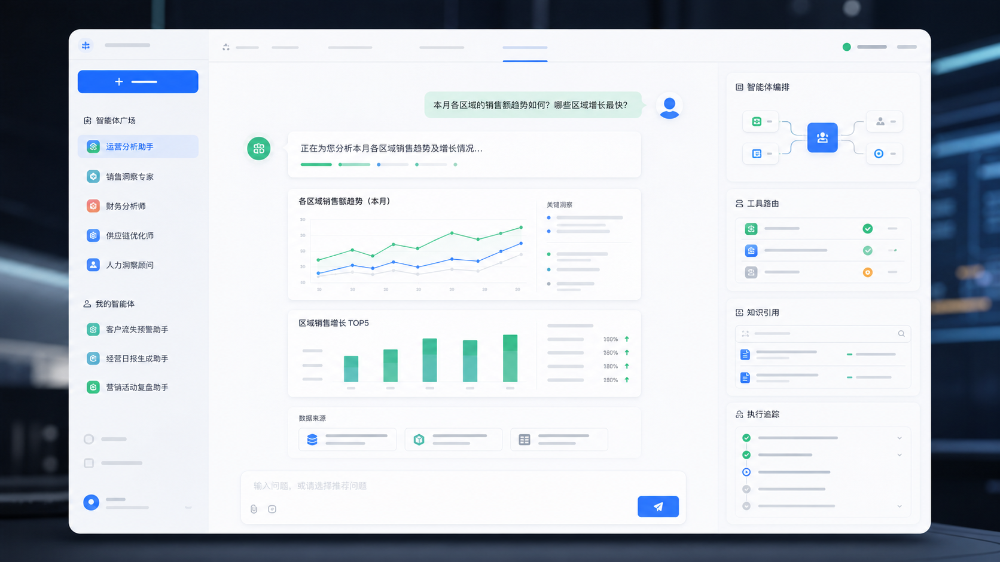
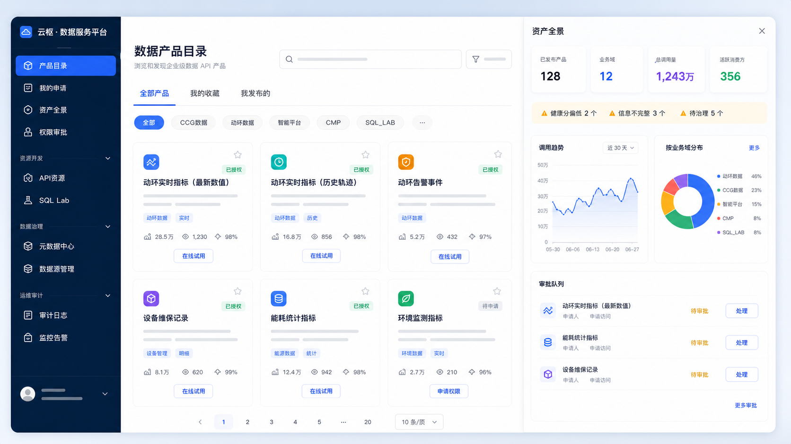

01
云枢 · 数据服务平台
企业级 Data API 与元数据治理平台，将物理表、自定义 SQL 与语义元数据封装为可审计、 可授权、可观测的 RESTful API。
- TABLE 零代码映射与 SQL 模板封装
- SQL Lab、数据产品目录、资产全景
- RBAC、审计日志、脱敏与 SQL 护栏

Enterprise Data & Agent Platform
以数据服务平台作为治理底座，以智能体平台承接推理、工具与业务执行，再用 OpenClaw Buddy 降低多渠道 AI Agent 的运营门槛。
Positioning
这不是三个孤立项目的陈列，而是一条从数据供给到智能执行、再到低门槛管理的产品链路。 数据平台负责把物理表、SQL 与 API 资源治理起来；智能体平台负责让 ChatBI、知识库、MCP 工具与企业系统协同运行；OpenClaw Buddy 则把开放式 Agent 网关变成非技术人员也能使用的 Web 工作台。
Product Matrix
01
企业级 Data API 与元数据治理平台，将物理表、自定义 SQL 与语义元数据封装为可审计、 可授权、可观测的 RESTful API。
02
面向企业复杂场景的 AI 智能中枢，负责智能路由、AgentScope ReAct 执行、ChatBI、 知识库、MCP 工具与嵌入式 Chat SDK。

03
为 OpenClaw 打造的零门槛 Web 管理台与对话伴侣，把 Bot、模型、Skills、渠道、 Workspace 文件和 Console 终端放进同一块工作台。
Architecture
底层治理数据，中层封装智能执行，上层面向业务系统、渠道和运营人员提供可控入口。
MySQL、ClickHouse、Oracle、SQL Server、业务库与非结构化文档。
元数据治理、SQL Lab、API 资源、目录发布与审计。
ChatBI、Knowledge、MCP、工具调用、任务调度与 Trace。
嵌入式聊天、OpenClaw Buddy、飞书/微信/Telegram 等入口。

Experience
数据产品目录、资产全景、权限申请与审批，让 API 不只是技术接口，而是可以被业务域浏览、 申请、追踪和运营的数据产品。
Scenarios
让业务人员用自然语言查询指标、拆解趋势，结合元数据、权限与 SQL 安全链路支撑企业级 ChatBI。
把表、SQL 与接口封装成可发现、可申请、可审计的数据产品，形成统一的数据服务目录。
沉淀企业文档、语义元数据和业务口径，为智能体提供可信上下文与可追溯引用。
通过 MCP 连接企业系统、插件与生产力工具，让智能体具备可控的业务执行能力。
通过 Embed Chat SDK 接入现有鉴权、租户与业务流程，把智能体嵌进真实工作场景。
用 OpenClaw Buddy 把聊天、Workspace 文件、Skills、Console 终端和运行诊断放进同一块工作台。
Delivery
三个项目都围绕企业内网、权限体系、多源数据和运维闭环设计，适合按模块分阶段落地： 先建数据服务底座，再接入智能体执行，最后补齐多渠道 Agent 运营入口。
Contact
如果你对云枢数据服务平台、智能体平台或 OpenClaw Buddy 感兴趣，欢迎通过邮件沟通， 也可以扫码关注公众号了解后续更新。
cexlong@gmail.com